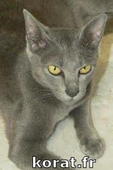

Le chat est un mammifère carnivore de la famille des félidés. Le mot chat vient du bas-latin cattus. Le chat domestique Felis silvestris catus est particulièrement proche du chat sauvage européen Felis silvestris silvestris et du chat sauvage africain (chat ganté) Felis silvestris libyca, qui forment certainement tous trois une unique espèce : Felis silvestris.
La rencontre entre l'homme, le chien et le chat n'est pas le fait du hasard, mais le résultat d'une "programmation génétique" leur donnant la faculté d'agir en interaction l'un par rapport à l'autre. "Chacun est doté de clés spécifiques qui ouvrent chez l'autre des serrures analogues", explique certains chercheurs.
Le chien et le chat seraient les deux seuls animaux capables d'acquérir les modes de communication de leur espèce, mais aussi ceux des humains. Une multitude d'études scientifiques en attestent, notamment celle de E. Karsh-D.C. Turner (1987) pour le chat. Le résultat est une sorte de dualité de comportement : le chat a une conduite propre à son espèce, et une conduite adaptée à la relation avec l'homme.
Il n'est d'ailleurs pas exclu que cette "double empreinte" existe chez d'autres animaux, notamment chez le cheval et le lapin, mais elle n'a pas encore été scientifiquement démontrée. Ce potentiel serait resté inexploité si chat n'avaient rencontré l'homme il y a 10 à 15 000 ans avant notre ère. Ce fut une rencontre très particulière, étrange, notent certains chercheurs. Et pour cause, de multiples conditions devaient être réunies pour la rendre possible.
Il fallait notamment que ces animaux soient étonnamment flexibles pour accepter d'être dominés, s'adapter à un nouvel environnement, adopter de nouveaux régimes alimentaires et, bien entendu, se familiariser avec l'homme et ses activités. Tout cela dénote chez eux d'un certain niveau d'évolution.
Mais, la grande question est évidemment de savoir pourquoi et comment le chien et le chat ont pu passer du stade d'animal sauvage craignant l'homme, à celui de compagnon. Une mutation génétique "qui a affecté le comportement de certains canidés et félidés" est à l'origine de ce phénomène. Cette transformation leur aurait permis de dominer leur peur et d'endiguer leur agressivité. Les "mutants" se sont alors retrouvés en situation d'infériorité par rapport à leurs congénères et ont cherché protection et nourriture auprès de l'homme, révélant ainsi leur aptitude à comprendre ses modes de communication. "Dans le contexte de l'époque, l'aspect non menaçant de ces animaux a aussi pu avoir un effet anxiolytique pour l'homme, dont nous héritons peut-être encore aujourd'hui", avancent timidement les chercheurs.
À partir du moment où l'homme prête une signification affective au comportement de l'animal, il est possible de parler d'animal familier, car les conditions sont créées pour qu'il soit considéré de part et d'autre comme faisant partie de la famille.
En France, nous savons dernier recensement publié en 2010 qu'il y a désormais plus de chats que de chiens (plus de 10 millions, voir les statistiques ici).
Biologie
Du fait d'une alimentation plus diversifiée et moins riche en protéines, les intestins du chat domestique sont plus longs que chez ses ancêtres sauvages. Avec une diminution de sa taille, c'est l'adaptation la plus notable à son nouveau mode de vie.
Les sens
Prédateur crépusculaire (coucher et lever du soleil) à l'origine, le chat possède des sens très développés. Il perçoit son univers d'une façon différente de la nôtre et on lui a même prêté des pouvoirs surnaturels. Il existe ainsi de nombreuses légendes de chats ayant prédit des tremblements de terre ou autres catastrophes. L'explication la plus probable est que son oreille soit apte à percevoir des vibrations inaudibles pour les humains.
L'ouïe
Son ouïe est particulièrement sensible dans les hautes fréquences : il perçoit des ultrasons jusqu'à 30 000 Hz alors que l'oreille humaine est limitée à 20 000 Hz. Son pavillon en cornet peut être orienté grâce à vingt-sept muscles, ce qui lui permet de pivoter chaque oreille indépendamment pour localiser avec précision la source d'un bruit et sa distance.

La vue
La vue est son sens primordial. Contrairement à une idée répandue, il est incapable de voir dans le noir complet. Il est toutefois beaucoup plus performant que nous dans la pénombre. Son champ de vision est également plus étendu que celui de l'Homme : 187° contre 125°, ce qui reste cependant loin du record absolu du monde animal. L'intensité lumineuse influence la forme de la pupille : allongée en fente étroite en pleine lumière, elle se dilate en un cercle parfaitement rond à la pénombre. La nuit, l'aspect brillant des yeux est dû à une couche de cellules de la rétine qui agit comme un miroir et renvoie la lumière perçue, ce qui la fait passer une seconde fois dans la rétine et multiplie ainsi par deux son acuité visuelle dans l'obscurité.
En revanche, le chat ne perçoit pas les couleurs ni même les mouvements de la même façon que nous : il est d'avis (car cela est encore discuté) qu'il ne perçoit pas la couleur rouge et que, d'une manière générale, il distingue très mal les détails. Sa vision est granuleuse sur les images fixes alors qu'un objet en mouvement lui apparaît plus nettement (par exemple une proie en mouvement).
L'odorat
Son odorat est quarante fois plus performant que celui de l'humain et a une grande importance dans la vie sociale du félin pour délimiter son territoire. Par ailleurs, c'est son odorat développé qui lui permet de détecter la nourriture avariée et empoisonnée. Il possède vingt millions de terminaux olfactifs, contre cinq millions chez l'homme.
Le goût
Le sens du goût est développé chez le chat, moins que chez l'humain cependant : chez le chat, on compte près de 500 bourgeons gustatifs alors que l'homme en possède 9 000, donc 18 fois plus. Contrairement au chien, le sens gustatif du chat est localisé à l'extrémité de la langue, ce qui lui permet de goûter sans avaler. Il est sensible à l'amer, à l'acide et au salé, mais non au sucré.
Le toucher
Son sens du toucher est également bien développé. Ses vibrisses (« moustaches ») lui indiquent la proximité d'obstacles, même dans l'obscurité totale, en lui permettant de détecter les variations de pression de l'air. Les coussinets garnissant ses pattes sont très sensibles aux vibrations et sa peau est constellée de cellules tactiles extrêmement sensibles.
Autres sens caractéristiques du chat
L'organe de Jacobson(1) est un véritable sixième sens. Comme le chien ou le cheval, le chat est capable de goûter les odeurs à l'aide de son organe voméro-nasal. Il retrousse ses babines pour permettre aux odeurs de remonter par deux petits conduits situés derrière les incisives jusqu'à deux sacs remplis de fluide dans les cavités nasales chargées de concentrer les odeurs.
Son organe vestibulaire est également particulièrement développé, lui conférant un sens de l'équilibre remarquable. Ceci explique l'étonnante faculté qu'ont les chats de se retourner rapidement pour retomber sur leurs pattes lors d'une chute.
Il peut également sauter à une hauteur cinq fois supérieure à sa taille.
Dans la course, sa vitesse moyenne est de 40 km/h et il met 9 secondes pour faire 100 m, mais il n'est pas un coureur de fond et il se fatigue assez vite.
Reproduction, Gestation, Mise Bas
Les chats peuvent se reproduire à partir de 9 mois. La femelle est en chaleur deux fois par an, généralement au printemps et à l'automne. En période de chaleur des chattes, les mâles marquent leur territoire en urinant. Ils se battent souvent avec d'autres mâles, ils s'amaigrissent et se négligent. Lorsqu'ils sont à même de pouvoir s'accoupler avec la femelle encore faut-il qu'elle les accepte. Lors de l'accouplement, le mâle monte sur le dos de la femelle et lui mord la peau du cou le temps de l'accouplement.
La femelle a tendance à gémir et à s'énerver, soit à cause de la morsure du mâle à la base de son cou, soit car le temps d'accouplement devient long ou encore car elle se sent piégée, et ne peut plus bouger (elle essaye d'ailleurs de se libérer en mordant et griffant le mâle).
La gestation dure environ 60 jours et une portée compte en moyenne de 3 à 4 chatons. À 3 semaines,les mamelles de la femelle grossissent et rosissent. À 4 semaines, son ventre commence à gonfler et son appétit ira en grandissant jusqu'à la mise bas des chatons. Durant la gestation, la chatte veillera à ne pas en faire trop, elle sera plus câline et docile, recherchant sans cesse de l'affection. À 7 semaines, elle commencera à chercher un endroit calme et convenable pour accoucher.
À l'intérieur, la chatte choisit souvent un placard à linge, un carton… Lorsque le moment est venu pour la mise bas, c'est-à-dire entre 61 et 70 jours après la conception, la chatte s'agite, et il est important que son maître soit près d'elle pour la soutenir. Après ses contractions, la chatte met bas son premier chaton (environ dans les 20 minutes), puis selon le cas, soit les autres suivront rapidement, soit ils mettront plusieurs heures pour sortir (le temps de mise bas peut aller jusqu'à 24 heures). Les chatons arrivent dans une poche, la chatte lave immédiatement ses petits à coups de langue pour stimuler leur première inspiration. Ensuite, elle mange le placenta, et coupe le cordon ombilical. Le chaton cherche alors de suite à téter.
Le chaton naît « aveugle » (les yeux fermés) et pèse de 80 à 100 g ; lorsqu'il ouvre les yeux, ils sont de couleur bleue jusqu'au changement définitif (vers 2 mois) pour la plupart des chats sauf le Korat où ils vont passer de l'ambre au vert qui va s'éclaircir et se stabiliser vers 2 ou 3 ans. Le sevrage des chats dure 2 mois, et durant toute cette période, la mère apprendra aux chatons à se laver, se nourrir, chasser, etc. Encore une fois le Korat se distingue car le père participe au foyer et à l'éducation des chatons.
Pour plus d'informations sur la procréation des Korats : cliquez ici.
Sommeil
Le chat dort beaucoup, en moyenne 15 à 18 heures par jour. Il reste ainsi éveillé environ 6 à 9 heures, dont une partie la nuit pour chasser. On l'utilise fréquemment dans le cadre d'expérimentations sur les cycles du sommeil.
Alimentation et boisson
Le chat est essentiellement carnivore (petits mammifères et oiseaux, voire des insectes comme les mouches) même s'il lui arrive de manger des plantes, semble-t-il essentiellement pour l'effet vomitif qu'elles ont sur lui, effet qui lui permet d'évacuer les poils accumulés dans son estomac lors de ses longues et fréquentes séances de toilette. Il ne reniera jamais leur sa naturelle. Toutefois, il convient de ne pas lui donner trop souvent de viande crue, afin d'éviter l'absorption de parasites que la cuisson neutralise.
La viande permet néanmoins au chat d'assimiler de la taurine, molécule produite par le chat mais en quantité insuffisante. La carence en taurine entraîne des troubles de la vue, cardiaques, de la reproduction chez la femelle et un déficit immunitaire. La taurine est également ajoutée dans certains produits industriels (lait pour chat …)
Les os sont eux aussi à éviter : en les croquant, les chats peuvent se transpercer le palais avec des morceaux saillants. Enfin, certains spécimens apprécient les aliments à base de lait, tels que les biscuits et les madeleines ; à donner avec précaution, puisque le chat ne se brosse pas les dents. Certains types de croquettes ne sont pas préconisés pour la bonne santé du chat car elles peuvent favoriser les calculs rénaux. Il faut donc être vigilant quant à la marque et ne pas hésiter à mettre le prix (pour une qualité optimale) pour le bon fonctionnement intestinal de votre animal.
Le chat domestique, s'il y a été habitué jeune, dévie son régime alimentaire naturel et mange aussi des fruits et des légumes (tomates, pommes de terre, endives, etc.) ou des plats cuisinés comme les pâtes ou les gâteaux et tartes.
Pour la boisson, il convient de laisser décanter l'eau du robinet plusieurs heures pour la laisser perdre son chlore, qui rebute l'odorat de l'animal, et qu'elle soit à la température ambiante. Les chats apprécient également le lait, mais certains individus présentent une intolérance au lactose.
Pour plus d'informations sur l'alimentation du chat, cliquer ici.
Ses rejets
Les chats, dans la nature, choisissent un coin de terre meuble pour y faire leurs besoins naturels. Ils les recouvrent ensuite de terre, en grattant cette dernière avec leurs pattes avant. S'ils sont sédentaires, ils ne changent que rarement d'endroit, à moins que celui-ci soit saturé.
Les chats « d'intérieur » font leurs besoins dans une litière, qu'il convient d'entretenir quotidiennement. Un fond de papier journal recouvert d'une fine couche de litière suffiront pour les jeunes animaux ; avec le vieillissement de l'animal, le volume d'urine croît, il est donc important d'en tenir compte dans la composition et le renouvellement de ladite litière. Il faut également éviter les bacs fermés, qui ont pour inconvénient de concentrer l'ammoniac issu de l'urine, et donc rebutent le chat. Votre compagnon ne manquera pas d'inaugurer son bac récemment changé, et vous en remerciera.
Caractère
On distingue quatre grands traits de caractère pour les chats :
- les actifs,
- les affectueux,
- les calmes,
- les caractères forts.
Pour en savoir plus : cliquer ici.
Éthologie
Le chat est classé parmi les animaux territoriaux. Cela signifie que la préservation de son lieu de vie est le moteur principal de ses interactions avec les autres individus. Lorsque plusieurs chats partagent le même appartement, il n'est pas rare de les voir choisir chacun son propre « chemin » pour aller d'un lieu à un autre ; ils se partagent ainsi leur territoire.
À l'état sauvage, il a une activité crépusculaire nocturne, aidé par ses yeux très sensibles.
Histoire
Jusqu'en 2001, on pensait que les chats avaient été domestiqués par les Égyptiens pendant l'antiquité, mais la découverte des restes d'un chat aux côtés de ceux d'un humain dans une sépulture à Chypre repousse le début de cette relation au VIIe millénaire av. J.-C. (-7 000). La cohabitation des chats et des hommes est probablement arrivée avec le début de l'agriculture : le stockage du grain a attiré les souris et les rats, qui ont attiré les chats, leur prédateur naturel.
Les Égyptiens de l'Antiquité divinisèrent le chat sous les traits de la déesse protectrice Bastet. On a également retrouvé de très nombreuses momies de chats qui montrent à quel point les Égyptiens les vénéraient.
Par contre, la Grèce antique ne connaît longtemps que les mustélidés, furet et belette. Plus tard, le chat sera importé d'Égypte et s'arrogera une place auprès des grecs, d'abord sous le nom de ailouros («balance-queue»), puis à partir du IIème siècle avant notre ère, katoikidios («belette domestique»).
Les Romains, par contre, vouaient une passion au chat : d'abord réservé aux classes aisées, l'usage de posséder un chat se répandit dans tout l'empire et dans toutes les couches de la population, assurant la dispersion de l'animal dans toute l'Europe. Par contre, il fut satanisé en Europe durant une partie du Moyen Âge, et ne connut de retour en grâce qu'à la faveur du romantisme (le chat est l'animal romantique par excellence, mystérieux et indépendant).
Pour plus d'informations sur l'origine du chat, cliquez ici pour aller sur la page concernant son origine.
Le chat au quotidien
Le comportement des chats domestiques peut apparaître comme capricieux, et comme chez tous les animaux, chaque individu a un comportement et un caractère qui lui est propre. Les chats ont en général tendance à affirmer leur indépendance vis-à-vis des autres occupants d'un lieu mais ils savent être affectueux, ce sont simplement eux qui choisissent le moment… Vous pensiez avoir un chat…quelle erreur ! En fait vous habitez chez lui !
Symbolique
Dans la symbolique occidentale, le chat est associé à la malchance et au mal, d'autant plus quand il est noir, à la sournoiserie et à la féminité. C'est l'animal du diable et des sorcières. On lui attribue aussi neuf vies.
Les races de chats
Il existe une soixantaine de races de chats.
© LOOF
- Ne perd quasiment aucun poil (il existe néanmoins une autre race de chat ne perdant pas de poils : le Sphynx qui n'en possède pas) ;
- Est aujourd'hui reconnu comme la race ayant la plus longue durée de vie (20 à 30 ans voir davantage puisque le plus vieux chat du monde était un Korat de 38 ans : voir records !
- Est admis la race de chats la plus intelligente, c'est d'ailleurs à cause de leur intelligence que l'on ne retrouve que des korats en chats de cirque !
- Est l'une des races si ce n'est la race (aucune ne détient scientifiquement de palme) qui est la plus liée, à l'homme en général et à ses maîtres (dans le sens attachement, complicité, fidélité, affection…)
- Est d'une musculature hors pair (la race Korat domine les autres en rapport volume/poids possédant moins de graisses et davantage de muscles, ces derniers étant d'une masse supérieure).
Proverbes à propos du chat
À bon chat, bon rat : un bon chasseur peut trouver un adversaire à sa mesure.
La nuit, tous les chats sont gris : dans l'obscurité, les détails se fondent et on peut confondre des objets pourtant fort différents.
Quand le chat dort (n'est pas là), les souris dansent : lorsque le pouvoir en place n'est pas représenté, ceux qu'il oppresse/surveille peuvent agir librement.
Il ne faut pas réveiller le chat qui dort : il faut éviter de réactiver une source de danger lorsqu'elle s'est mise en sommeil d'elle-même.
Chat échaudé craint l'eau froide : une mauvaise expérience peut faire craindre d'en tenter d'autres, même si elles sont inoffensives.
Il est difficile d'attraper un chat noir dans une pièce sombre, surtout lorsqu'il n'y est pas (proverbe chinois).
Littérature
Le chat est ami des écrivains, Colette (La Chatte), Charles Baudelaire, Edgar Allan Poe (Le Chat noir), Marcel Aymé (Les contes du chat perché) ont écrit sur lui. Il est le héros central du Chat botté de Charles Perrault ; il est Tibert dans le Roman de Renart.
Dessin animé
Le chat est un personnage fréquent dans les dessins animés : Titi et Gros Minet, Tom & Jerry, Speedy Gonzalez-, Itchy et Scratchy (dessin animé inclus dans Les Simpson), Félix le chat, Le Royaume des Chats d'Hiroyuki Morita (anime), le chat potté le mettent en scène.
(1) L'organe voméronasal, ou organe de Jacobson, découvert en 1813 par le danois Ludvig Jacobson, est un organe situé sous la surface intérieure du nez et spécialisé dans la détection des phéromones. Il est présent chez les mammifères ainsi que chez les reptiles. Chez l'homme, cet organe est atrophié et ne joue plus un rôle aussi prépondérant que pour d'autres espèces.